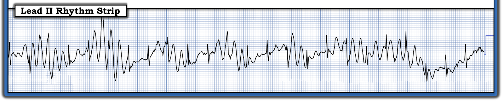
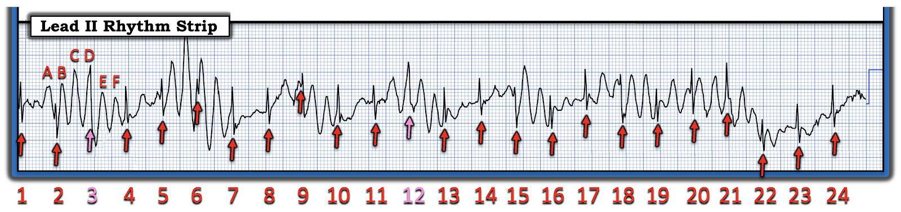
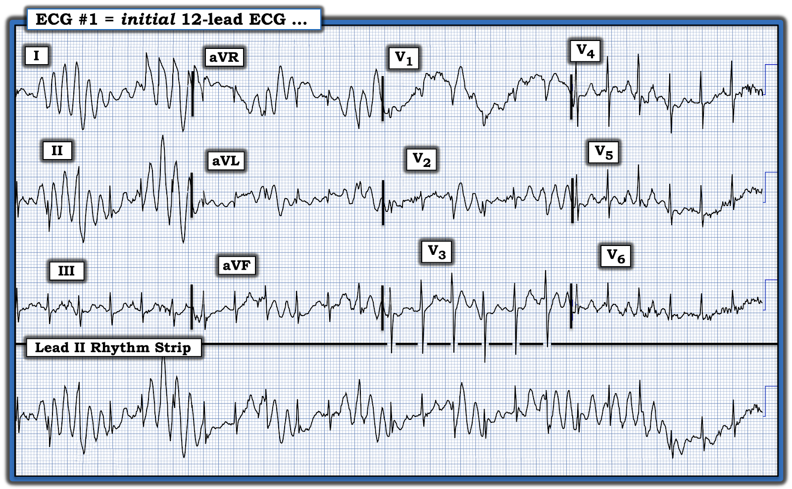
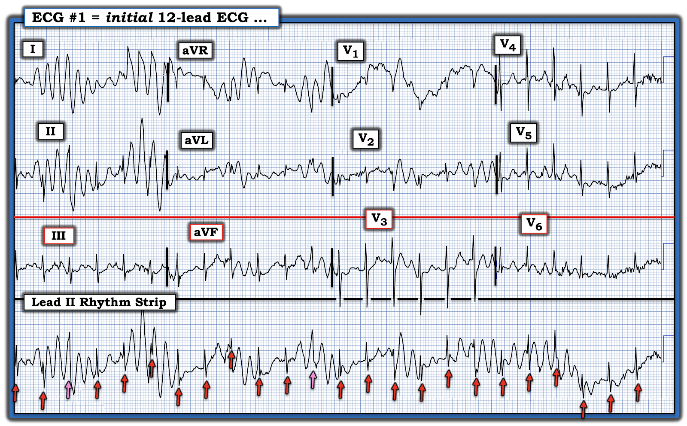
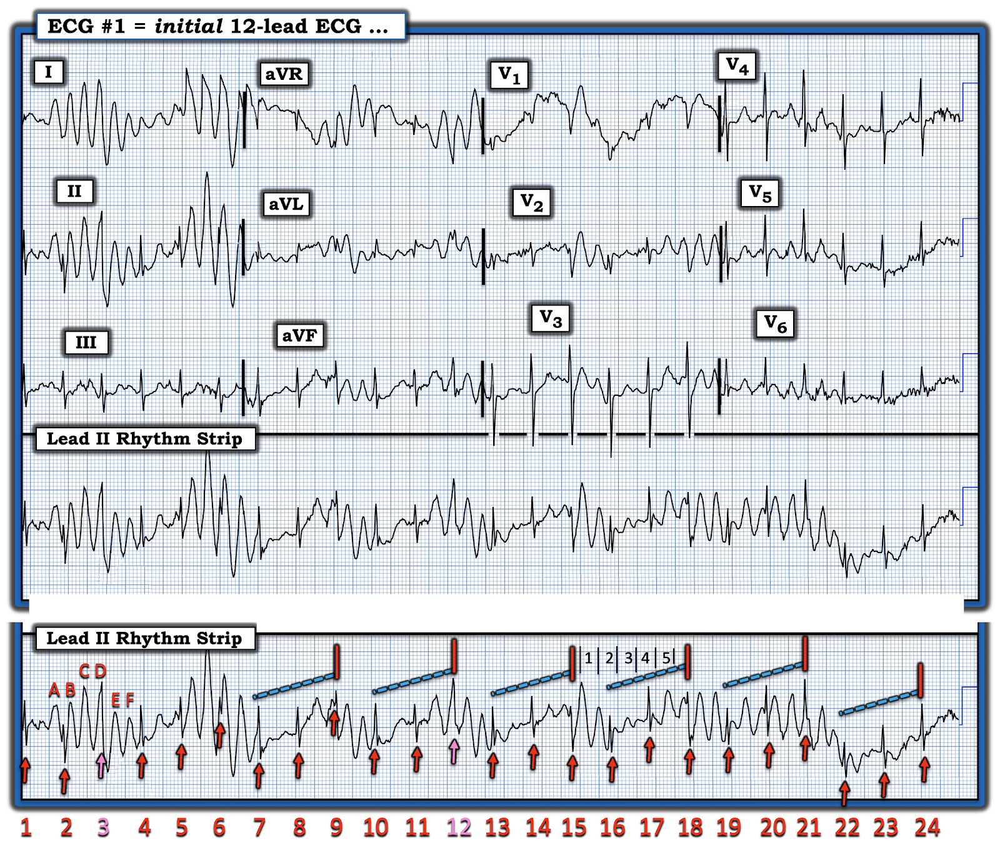

ECG Blog #478 — Xoắn đỉnh hay nhịp nhanh thất đa dạng?
Dải nhịp chuyển đạo II dưới đây trong Hình-1 được ghi từ một người đàn ông lớn tuổi đang dùng nhiều loại thuốc — và đến bệnh viện vì khó thở.
CÂU HỎI:
- Mối lo ngại với dải nhịp này là liệu bệnh nhân có đang bị những cơn xoắn đỉnh (Torsades de Pointes) hay những cơn PMVT (nhịp nhanh thất đa dạng — PolyMorphic Ventricular Tachycardia) từng lúc hay không?


SUY NGHĨ CỦA TÔI về nhịp trong Hình-1:
Như đã nhấn mạnh trong ECG Blog #231 — hình ảnh điện tâm đồ trong một cơn xoắn đỉnh và một cơn PMVT trông giống hệt nhau! Khác biệt về chẩn đoán giữa 2 rối loạn nhịp này — tùy thuộc vào việc QTc có kéo dài hay không trước khi khởi phát loạn nhịp nhanh thất.
- Dù vậy — không có xoắn đỉnh cũng không có PMVT trong Hình-1.
Các mũi tên ĐỎ cho thấy điều gì?
MẤU CHỐT để đọc nhịp hôm nay được làm nổi bật bằng các mũi tên ĐỎ mà tôi đã thêm vào Hình-2.
- CÂU HỎI: BẠN thấy gì trong Hình-2?


TRẢ LỜI:
Các mũi tên ĐỎ trong Hình-2 — biểu thị các phức bộ trên thất được dẫn truyền bình thường (tức là hẹp). Điều này dễ nhận ra nhất khi ta thấy rõ 2 phức bộ QRS hẹp liên tiếp (tức là các phức bộ QRS hẹp được đánh dấu bằng mũi tên ĐỎ #4,5; 7,8; 10,11; 13,14; 16,17;) — và nhất là về cuối dải nhịp này, nơi ta thấy 3 phức bộ QRS hẹp liên tiếp (tức là các phức bộ QRS được đánh dấu bằng mũi tên ĐỎ #19,20,21 và #22,23,24).
- Giờ hãy nhìn mũi tên ĐỎ #2 gần đầu bản ghi. Lưu ý rằng phức bộ QRS hẹp được đánh dấu bằng mũi tên #2 này — đứng ngay sau phức bộ đầu tiên trong một loạt phức bộ kỳ dị rất cao, rất rộng (A) — và theo sau là 5 phức bộ rộng kỳ dị liên tiếp (B,C,D,E,F).
- Khoảng cách giữa mỗi phức bộ trong 6 phức bộ rộng, kỳ dị này không quá 1 ô lớn — nghĩa là tần số của các phức bộ kỳ dị này (từ A đến F) là ~300/phút!
- Lưu ý rằng phức bộ rộng kỳ dị thứ 1 xuất hiện ngay trước QRS được đánh dấu bằng mũi tên #2 — và phức bộ kỳ dị thứ 2 xuất hiện ngay sau QRS này. Điều này là không thể! Nếu các phức bộ rộng, kỳ dị này là "thật" — thì A đã ngăn không cho QRS này xuất hiện. Tương tự, B không thể xuất hiện, vì nó quá gần QRS, rơi vào ARP (thời kỳ trơ tuyệt đối — Absolute Refractory Period). Do đó — các phức bộ rộng, kỳ dị trong Hình-2 không thể là "thật", và vì vậy phải là nhiễu (artifact)!
ĐIỂM THEN CHỐT (PEARL) #1: Cách TỐT NHẤT để nhận ra nhiễu — là khi bạn thấy được nhịp tim nền tiếp diễn không bị ảnh hưởng xuyên qua vùng nhiễu! Đây chính xác là tình huống trong Hình-2.
- Dù một số phức bộ QRS dễ nhận ra hơn những phức bộ khác — mỗi mũi tên ĐỎ trong Hình-2 đều tương ứng rõ ràng với một phức bộ QRS hẹp đúng lúc.
- Lưu ý có 2 mũi tên HỒNG trong Hình-2. ( = mũi tên #3 và #12) Chúng tương ứng với 2 vị trí mà ta sẽ mong đợi có 2 phức bộ QRS đúng lúc xuất hiện (tức là sẽ cực kỳ bất thường nếu 22 phức bộ QRS đúng lúc mà ta có thấy trong Hình-2 — đột nhiên rớt 2 nhát mà không làm thay đổi tính đều đặn của nhịp nền này).
- Như vậy, nhịp nền trong Hình-2 — có vẻ là một dạng nhịp trên thất nào đó với tần số ~140/phút, dù không có bằng chứng rõ ràng về hoạt động nhĩ. (Nhưng mặt khác, đường nền dường như bị nhiễu làm xáo trộn quá nhiều để biết liệu hoạt động nhĩ có thể hiện diện nhưng bị che khuất hay không).
- ĐIỀU CỐT LÕI: Sự hiện diện của một nhịp trên thất có vẻ đều suốt dải nhịp chuyển đạo II trong Hình-2 (dù có ngoại lệ ở 2 mũi tên HỒNG) — cho ta biết rằng các phức bộ rộng, kỳ dị này, vốn có hình dạng thay đổi không đoán trước được, gần như chắc chắn là nhiễu.
=============================
CA BỆNH TIẾP DIỄN:
Trong Hình-3 — ta thấy điện tâm đồ 12 chuyển đạo được ghi đồng thời với dải nhịp chuyển đạo II dài trong Hình-2.
CÂU HỎI:
- Điện tâm đồ 12 chuyển đạo trong Hình-3 này có làm rõ nhận định của chúng ta về dải nhịp chuyển đạo II dài không?


TRẢ LỜI:
Điện tâm đồ 12 chuyển đạo ghi đồng thời trong Hình-3 — xác nhận nhận định của chúng ta rằng các sóng lệch rộng, không đều và rất nhanh trên dải nhịp chuyển đạo II dài là nhiễu.
- Lưu ý rằng có một ít nhiễu ở tất cả các chuyển đạo của bản ghi 12 chuyển đạo này. Dù vậy — chẳng phải lượng nhiễu tương đối rõ ràng ít hơn ở 4 chuyển đạo nằm dưới đường ĐỎ nằm ngang trong Hình-4 sao?
- Theo ĐIỂM THEN CHỐT #1 — chẳng phải giờ đây dễ hơn để xác nhận sự xuất hiện đều đặn của một nhịp trên thất nền ở chuyển đạo III, aVF, V3 và V6 sao?


Hãy quay lại Hình-3 một chút.
- Trong 3 chuyển đạo chi chuẩn (tức là chuyển đạo I,II,III ) — chẳng phải biên độ tương đối của các sóng lệch do nhiễu lớn nhất ở chuyển đạo I và II, so với chuyển đạo III sao?
- Và trong 3 chuyển đạo chi tăng thế (tức là chuyển đạo aVR, aVL, aVF) — chẳng phải biên độ tương đối của các sóng lệch do nhiễu lớn nhất ở chuyển đạo aVR sao?
- ĐIỂM THEN CHỐT (PEARL) #2: Như đã bàn trong ECG Blog #428 — cách nhanh để xác định chi nào chịu trách nhiệm chính gây ra nhiễu khi 2 trong số các chuyển đạo chi chuẩn có biên độ nhiễu tương tự nhau (như ta thấy ở chuyển đạo I và II trong Hình-3) — là xem chuyển đạo tăng thế nào có biên độ nhiễu lớn nhất. Vì đó là chuyển đạo aVR — nhiều khả năng bệnh nhân cử động quá mức RA (tay phải — Right Arm) — điều có thể dễ dàng kiểm chứng bằng cách nhìn nhanh vào bệnh nhân!
ĐIỂM THEN CHỐT (PEARL) #3:
Về trường hợp nghi nhiễu: Hãy nhìn bệnh nhân — và bệnh nhân thường sẽ cho bạn biết nguyên nhân. Trong ca hôm nay — chúng ta được biết bệnh nhân đến viện vì khó thở.
- Một cái nhìn nhanh vào bệnh nhân có lẽ sẽ cho bạn biết LIỆU nhiễu trong Hình-4 là do; i) Khó thở — kèm theo cử động quá mức của chi trên bên phải; và/hoặc ii) Một cử động nào khác gây nhiễu (như run, rùng mình, co giật — và/hoặc dây điện cực bị lỏng).
- Hy vọng lượng nhiễu ít nhất cũng giảm được khi đã tìm ra và xử lý nguồn gây nhiễu. Khi đó — Ghi lại điện tâm đồ với hy vọng xác định được nhịp trên thất nhanh (khoảng 140/phút trong Hình-4) là nhịp nhanh xoang (sẽ chậm lại khi tình trạng bệnh nhân cải thiện) — hay một nhịp SVT khác (như AVNRT hoặc nhịp nhanh nhĩ).
=============================
Vượt ra ngoài phần cốt lõi:
Hãy nhìn lần cuối vào nhiễu trong ca hôm nay từ một góc độ khác.
- Lùi lại một chút — và nhìn từ xa dải nhịp chuyển đạo II dài. Trong Hình-5 — chẳng phải dường như sự dao động đường nền có một quy luật sao?
- SUY NGHĨ CỦA TÔI: Sẽ rất thú vị nếu nhìn vào bệnh nhân và kiểm chứng xem các đường XANH dốc lên lặp đi lặp lại trong Hình-5 có tương ứng với tần số thở ~50/phút hay không (tức là mỗi nhịp thở diễn ra trong hơn 1 giây một chút).



==================================
PHẦN BỔ SUNG — Liên kết tới các ví dụ về NHIỄU
Dưới đây là thêm các "sự cố" kỹ thuật — một số từ ECG Blog này; một số từ Dr. Smith's ECG Blog — một số từ các nguồn khác.
- Bài đăng ngày 15 tháng 1 năm 2024 — Tất cả về NHIỄU!
- Bài đăng ngày 18 tháng 2 năm 2024 — Về bộ lọc; PTA.
- Bài đăng ngày 18 tháng 5 năm 2024 — Bộ lọc; nhiễu từ RA.
- Bài đăng ngày 10 tháng 6 năm 2024 — Kỳ dị = nhiễu?
- Bài đăng ngày 15 tháng 9 năm 2023 — về PTA (nhiễu do mạch đập — Pulse-Tap Artifact).
- Bài đăng ngày 17 tháng 3 năm 2023 — về PTA.
- Bài đăng ngày 17 tháng 1 năm 2023 — về PTA.
- Bài đăng ngày 21 tháng 10 năm 2022 — về "VT do nhiễu".
- Bài đăng ngày 10 tháng 11 năm 2020 — về PTA.
- Bài đăng ngày 17 tháng 10 năm 2020 — về một phụ nữ 70 tuổi bị "VT do nhiễu".
- Bài đăng ngày 27 tháng 9 năm 2019 — về bài báo của Rowlands & Moore với các công thức nêu trên để nhận ra chi “thủ phạm”.
- Bài đăng ngày 22 tháng 9 năm 2019 — nhiễu sóng ST-T từng lúc.
- Bài đăng ngày 26 tháng 8 năm 2019 — nhiễu đường nền.
- Bài đăng ngày 30 tháng 1 năm 2018 — về PTA.
- Tổng quan ngắn của Tom Bouthillet về một số nguyên nhân thường gặp gây nhiễu.
- Tổng quan bổ sung về nhiễu điện tâm đồ của Pérez-Riera và cs. (Ann Noninvasic Electrocardiol 23:e12494, 2018)
- Nhiễu giống VT — của Knight và cs.: NEJM 341:1270-1274, 1999.
- ECG Blog #148 — Nhiễu giả rung thất (VFib).
- ECG Blog #132 — Thêm về nhiễu giống VT-VFib.
- ECG Blog #139 — Nhiễu giả cuồng nhĩ (AFlutter).
- ECG Blog #44 — Run do Parkinson so với cuồng nhĩ.
- ECG Blog #255 — Nhiễu từ chân trái.
- ECG Blog #201 — Có nên kích hoạt phòng thông tim không?
- ECG Blog #432 — Không phải PMVT — mà là NHIỄU!
- ECG Blog #478 — Nhiễu giả xoắn đỉnh ...